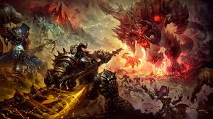
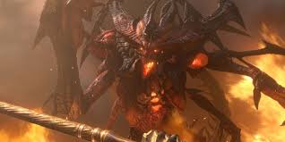
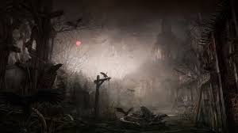
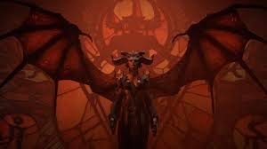

El Conflicto Eterno entre el Cielo y el Infierno
La saga de Diablo gira en torno al conflicto eterno entre los Altos Cielos y los Infiernos Abrasadores, con el mundo de Santuario atrapado en medio de la guerra. Ángeles y demonios han luchado desde tiempos inmemoriales, y los humanos, descendientes de los Nefalem, poseen el potencial de inclinar la balanza hacia uno u otro lado.
El conflicto eterno entre ángeles y demonios que define el destino de Santuario.
Diablo y los Males Mayores
Diablo, el Señor del Terror, es uno de los tres Males Mayores junto a Baal y Mephisto. Estos demonios buscan corromper y conquistar Santuario, infiltrándose en la mente de los humanos para sembrar el caos. A lo largo de la saga, los héroes deben enfrentarse a estos horrores para evitar la destrucción del mundo.
Diablo, el Señor del Terror, una de las entidades más poderosas de los Infiernos Abrasadores.
Los Horrores de Tristán y la Llegada del Errante Oscuro
En la primera entrega de Diablo, la ciudad de Tristán se ve consumida por la oscuridad cuando el rey Leoric es corrompido y su hijo, el príncipe Albrecht, es poseído por Diablo. Un héroe desciende a las profundidades de la catedral para derrotar a la entidad demoníaca, pero termina convirtiéndose en el Errante Oscuro, dando inicio a la historia de Diablo II.
Las ruinas de Tristán, el lugar donde comenzó la influencia de Diablo en Santuario.
El Regreso de Lilith y el Destino de Santuario
En Diablo IV, la historia se centra en el regreso de Lilith, la hija de Mephisto y creadora de la humanidad. Su influencia amenaza con cambiar el destino de Santuario, y los héroes deben enfrentarse a su oscura voluntad mientras la guerra entre el Cielo y el Infierno se intensifica una vez más.
Lilith regresa con la intención de cambiar el destino de la humanidad y Santuario.